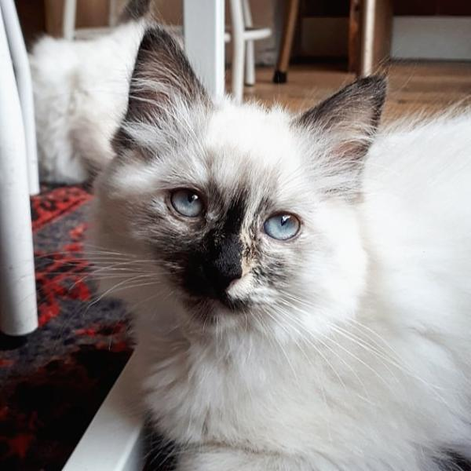
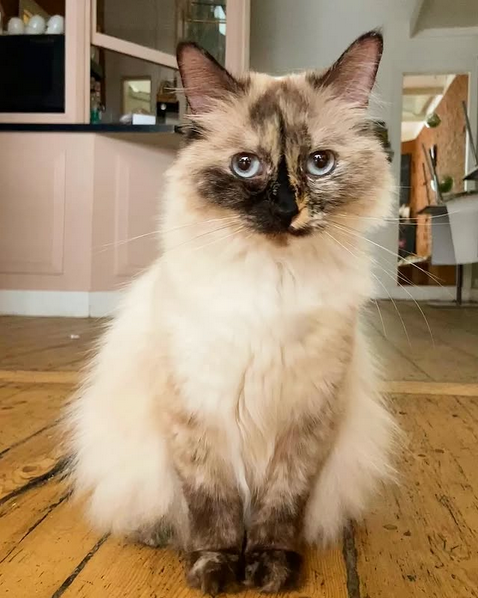
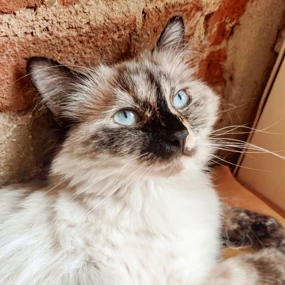
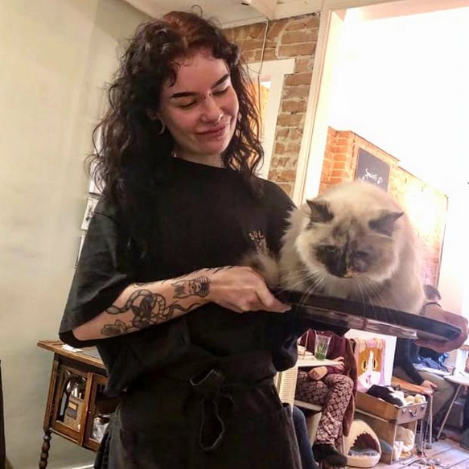
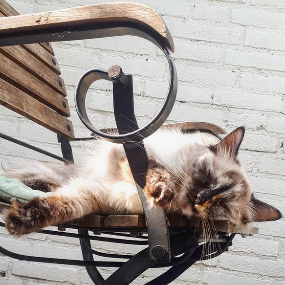
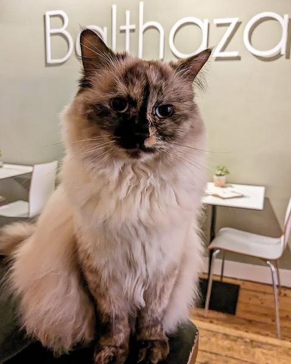
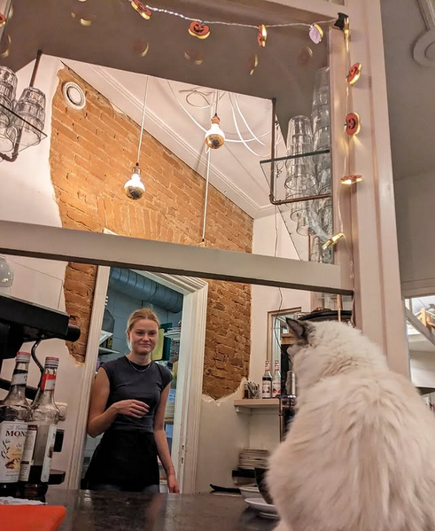

About
Stats
- Name: Puk
- Age: ~25
- Height: 193cm
- Pronouns: She/They
- Species: Human (professionally) / Cat (recreationally)
- Sexuality: Pan
- Drugs: Dextroamphetamine, Estrogen
- Programming language: C#, rust, lua, many others
Locations
- Almere, NL (2001 - 2011)
I was born in Almere, the Netherlands and spent my early childhood there, near a sweet nature reserve. Love Almere. - Drachten, NL (2011 - 2024)
I then moved to Drachten and spent my teenage years there. There’s a bunch of nice nature around Drachten and I do love visiting my parents there. Never was the biggest fan of this region of the Netherlands though, being quite remote and culturally reserved. - Amersfoort, NL and Zeist, NL (2025)
I lived in Zeist and Amersfoort for a while, I’m a big fan of Utrecht and the region around it. Me and my then roomie Lea had a blast living in a very elongated apartment in Zeist. - Amsterdam, NL (Now)
I’m currently living in a subleted room in Amsterdam. This is kind of a temporary affair while I’m figuring out buying a place of my own.
Plushies
- Fisk - The alien creature that accompanies me everywhere. Loves attention.
- Snail - My alien creature colleague. Loves to hang out on my lap or anyone else’s. Also a slut for attention. Pronounced Snàil.
- Young Neil - A chill bear that occasionally accompanies me to raves. Prefers to stay in bed all day.
My name
My full name is “Puk Miku Bruinsma”. I’m named after a very sweet adventurous ragdoll cat who used to be employed at Kattencafe Balthazar in Nijmegen, the Netherlands. After hesitantly claiming the name during a party, it became the name that stuck. Also my second name derives from the original diva, Hatsune Miku.
Here’s a few cat Puk pictures, look at her:






